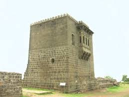
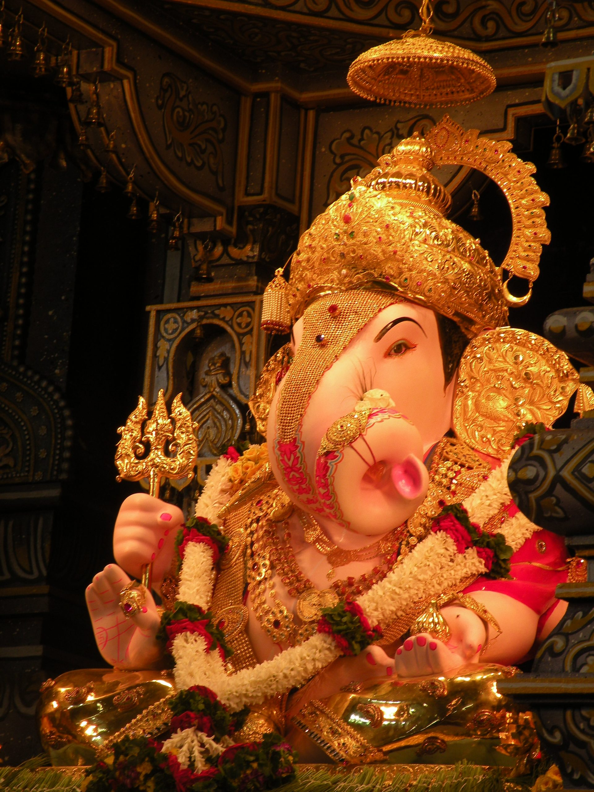
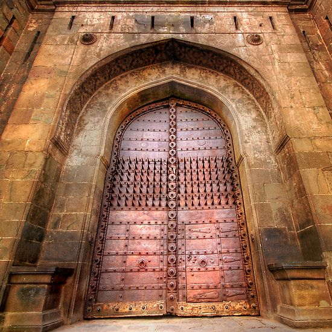
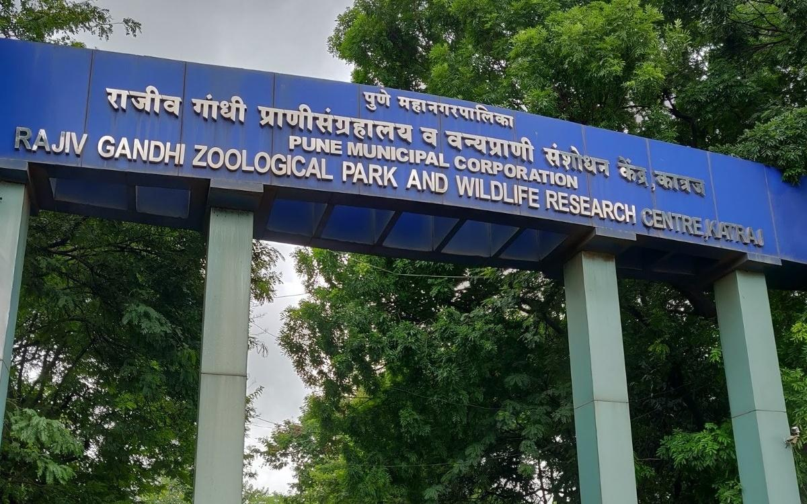

Insearch Outdoors
Home
(current)
About Us
Tours
Wildlife
Local Treks
Birding
Gallery
Register
Login
Search
Best Locations in Pune

Shivneri Fort
#1 in Best Places to Visit in Pune
Shivneri is known to be a place of Buddhist dominion from the 1st century AD. Its caves, rock-cut architecture and water system indicate the presence of habitation since 1st century AD. Shivneri got its name as it was under the possession of the Yadavas of Devagiri. This fort was mainly used to guard the old trading route from Desh to the port city of Kalyan. The place passed on to the Bahmani Sultanate after the weakening of Delhi Sultanate during the 15th century and it then passed on to the Ahmadnagar Sultanate in the 16th century. In 1595, a Maratha chief named Maloji Bhonsle, the grandfather of Shivaji Bhosale, was enabled by the Ahmadnagar Sultan, Bahadur Nizam Shah and he gave him Shivneri and Chakan. Shivaji was born at the fort on 19 February 1630 (some accounts place it 1627), and spent his childhood there. Inside the fort is a small temple dedicated to the goddess Shivai Devi, after whom Shivaji was named. The English traveller Fraze visited the fort in 1673 and found it invincible. According to his accounts the fort was well-stocked to feed thousand families for seven years. The fort came under the control of the British Rule in 1820 after the Third Anglo-Maratha War.

Dagdusheth Halwai Ganpati Temple
#2 in Best Places to Visit in Pune
Shrimant Dagadusheth Halwai (original name Dagadusheth Gadve) was a lingayat trader and sweet maker (halwai in Marathi). He came from Nandgaon Maharashtra and settled in Pune. After he gained fame as a halwai, that became his surname. His original halwai shop still exists under the name "Dagdusheth Halwai Sweets" near Datta Mandir in Pune. Eventually he became a successful sweet seller and a rich businessman. In later 1800s, they lost their two sons (Ram and Lakshman) in a plague epidemic. Later, as they did not had any heir, Dagdusheth adopted his nephew Govindsheth (born 1865) who was 9 years old at the time of their death. Govindsheth was born in 1891 in Pune. He replaced the first Ganesh idol by a new one, with the first one still being present at Kondwa Pitashree ashram temple. A kind-hearted and generous man, he established one more Ganesh idol in wrestlers training center, which is called Jagoba Dada Talim. This talim was owned by Dagdusheth as he was also a former wrestling trainer. One of the chowk (area) in Pune is named Govind Halwai Chowk, after him. Along with his mother, Govindsheth handled all the programmes like Ganesh Utsav, Datta Jayanti and other festivities. The residence where they resided is now known as Laxmibai Dagdusheth Halwai Sansthan Datta Mandir Trust. Laxmi Road in Pune is named after Laxmibai Dagdusheth halwai. Govindsheth died in 1943. His son Dattatray Govindsheth Halwai, born in 1926, was the one who established the third Ganesh idol replacing the second. This idol, known as Navasacha Ganpati, is the one that is present today in the Dagdusheth temple. Lokmanya Tilak and Bhausaheb Rangari, the Indian Nationalist leader and a contemporary of Dagdusheth, were close friends of Govindsheth. Tilak saw Govindsheth's dedication and also the construction of the temple, and it was here that the idea of celebrating public Ganesh festival struck him. It proved to be an epoch-making event in Indian history.

Shaniwar Wada Palace
#3 in Best Places to Visit in Pune
The Shaniwarwada was normally the seven-storey capital building of the Peshwas of the Maratha Empire. It was supposed to be made entirely of stone but after the completion of the base floor or the first storey, the people of Satara (the national capital) complained to the Shahu(King) saying that a stone monument can be sanctioned and built only by the Shahu(King) himself and not the Peshwas. Following this, an official letter was written to the Peshwas stating that the remaining building had to be made of brick and not stone. Even today if you visit and see the walls carefully, they are partly made of stone and partly by bricks. The Wada was then completed and upon being attacked by the British Artillery 90 years later, all the top six stories collapsed leaving only the stone base, which was immune to the British artillery. Hence only the stone base of the Shaniwar Wada remains and can be seen even today in the older parts of Pune. By 1758, at least a thousand people lived in the fort. In 1773, Narayanrao, who was the fifth and ruling Peshwa then, was murdered by guards on orders of his uncle Raghunathrao and aunt Anandibai. A popular legend has it that Narayanrao's ghost still calls for help on full moon nights. Various people, working around the area, have allegedly reported the cries of "Kaka mala vachava"(Uncle, save me) by Narayanrao Peshwa after his death. In June 1818, the Peshwa, Bajirao II, abdicated his Gaadi (throne) to Sir John Malcolm of the British East India Company and went into political exile at Bithoor, near Kanpur in present-day Uttar Pradesh, India. On 27 February 1828, a great fire started inside the palace complex. The conflagration raged for seven days. Only the heavy granite ramparts, strong teak gateways and deep foundations and ruins of the buildings within the fort survived. According to Haricharitramrutsagar, a biographical text of Bhagwan Swaminarayan, he had visited Shaniwarwada on the insistence of Bajirao II in 1799.

Rajiv Gandhi Zoological Park
#4 in Best Places to Visit in Pune
The zoo has collections of reptiles, mammals, and birds. Among mammals, the zoo has a white tiger and a male Bengal tiger named Tanaji. Other mammals at the zoo include leopard, sloth bears, sambhars, barking deer, blackbucks, monkeys, and elephants. Reptiles include Indian rock python, cobra, snakes, vipers, Indian crocodiles and Indian star tortoise and birds such as peafowl also feature. The snake park has a large collection of snakes, reptiles, birds and turtles. There are over 22 species of snakes with 10 species of reptiles comprising more than 150 individuals. This includes a 13-foot-long king cobra. Information about the snakes is provided in Braille, as well as more conventional formats, and the park includes a library. The snake park has organized many snake festivals and snake awareness programs to clarify doubts and destroy fears about snakes. During Nag Panchami, the park arranges programs to discourage ill-treatment of snakes. In April 2017, the zoo acquired a pair of Asiatic lions. This appears to have been one reason why visits to the zoo increased significantly, since the previous year.